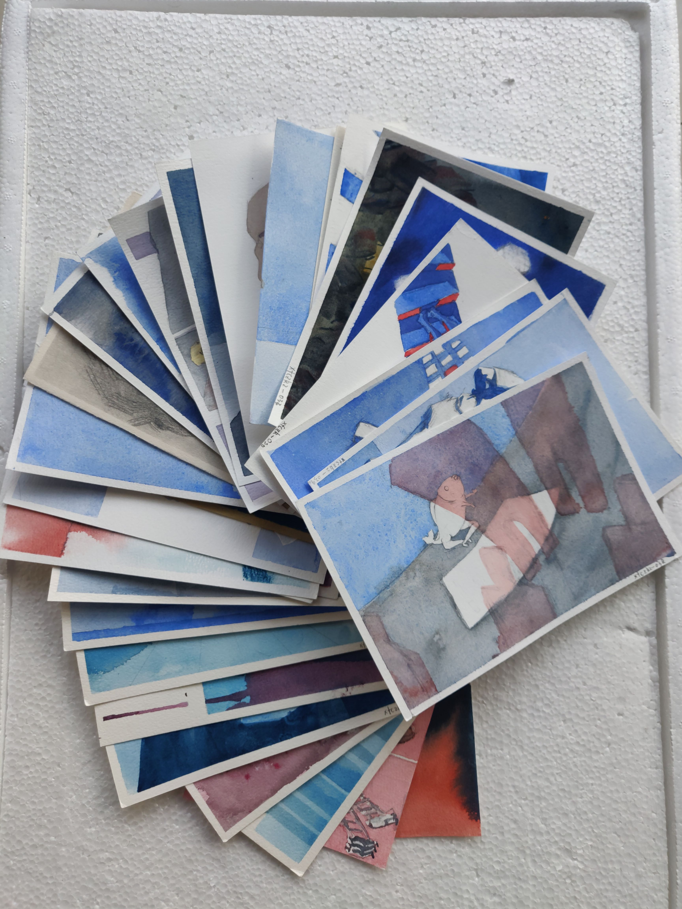

十月#
math/rand 相关算法#
- 随机数生成器
XORSHIFT generator
- 洗牌算法
Fisher - Yate Shulffu
Oneplus6 刷机 LineageOS 18.01#
- 日期:
- 位置:
:event.location:` <>`
给 找主题 作业拍照#

作业合影#
这里的画只有二十来张，一部分已经拍过了。
上次 iPad 拍得太灰了，于是还是换回一加了。谁能想到拍完照之后我手贱把手机的 Bootloader 解锁了，并且高版本的 Android 解锁还会清数据呢 Q_Q ？ 所以现在看到的其实是第二次拍的。
这次只画了 40 张，上了班确实空闲时间少太多了，不想再拖了所以就这样吧。
昨天看 巴尔格素描教程，说：「19 世纪学院派画家认为，收尾是职业精神的体现，能反映平和的心境，也能完全表达画家的理念」
这就是我不够学院派的原因吧。裁剪压缩都已经轻车熟路了，但是很想要一个自动裁剪的工具是真的。
奥菲莉亚#
- date:
2021-10-30
买了一辆二手小电驴，900 块钱，能开 30 公里左右，应该不算亏。
正好明天去上海看展，可以骑着它去地铁站。展上有 米莱 的成名作 奥菲莉娅。那给我的小电驴起名叫奥菲莉亚吧！
安卓 syncthing 部分目录显示「未同步」#
- date:
2021-10-31
因为部分文件名带了冒号（:）导致了。
有人汇报过 一样的问题并且机型也是一加 。按说和外存的文件系统有关系，但我懒得去看了，不让用冒号就不用嘛：
$ for i in $( ls | grep ':'); do mv $i $(echo $i | tr ':' '-'); done
评论
如果你有任何意见，请在此评论。 如果你留下了电子邮箱，我可能会通过 回复你。